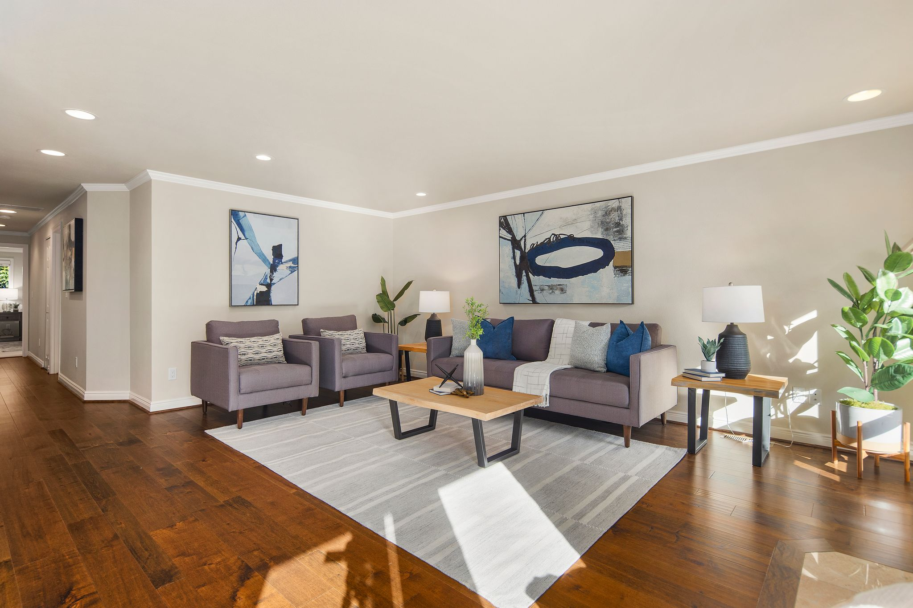

| |  |
| 中英双语 房地产投资组 | |
| Michael Lifton (English), 206-818-8634 | |
| Mei (中文), 206-866-5508 |
A long-time resident in the greater Seattle area, Michael holds 20+ years of residential architect design, and real-estate investment. Michael's business strives on client satisfaction and referrals.
Purchasing your first home is exciting, but can also be intimidating. It might be your biggest (or the first) investment in life. Rest assured that Michael will educate you step by step, understand how various mortgage programs work, do comp and practice making offers. It takes a patient realtor to walk with you throughout the whole process, however long that takes, until you find your dream home.
We are a team of bilingual experts in English and Mandarin, with extensive knowledge on real estate investment such as primary residence vs. rentals, 1031 exchange, income tax and estate tax. We have references to
Here is just a few proud properties that Michael designed and built in the past. We respect the new home owners' privacy if they opt not to show off their properties. So only list a few as references here. 以下是几个我们自己设计建筑的房子。有些新的屋主不愿意把照片公开。我们尊重屋主。有兴趣详情，请直接和我们联系。
Outside work, Michael enjoys spending quality time with friends & families, cooking (especially BBQ), sports, and help familes impacted by disabilities. 工作之余，迈克喜欢和亲朋好友在一起，做菜，烤肉，打球，和帮助有残障小孩的家庭。